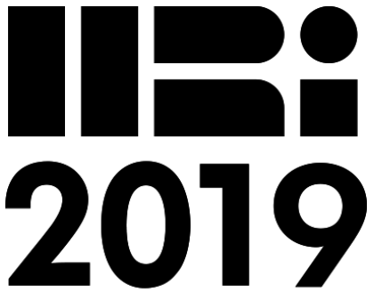
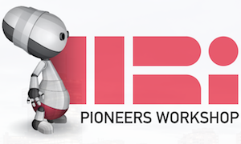
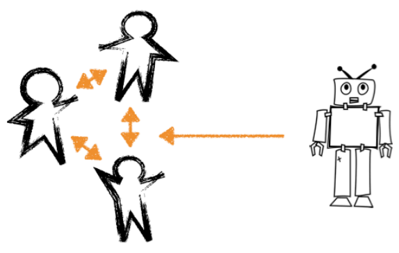

I am a fifth year graduate student at Yale University pursuing a Ph.D. in Computer Science. I work with Brian Scassellati in the Social Robotics Lab. I am interested in socially assistive robotics, human-robot interaction, artificial intelligence, and robot interactions with human-robot teams.
My research focuses on the development of robot teammates that promote positive team social dynamics in addition to the reliable completion of assigned tasks. My work explores behaviors and mathematical frameworks social robots can use to shape group trust, assist in mental model sharing, and improve team performance.
News

11/20/18
My paper examining the response of human participants to a robot's trust violation and subsequent repair was accepted to the 14th Annual ACM/IEEE International Conference on Human Robot Interaction in Daegu, South Korea.
10/31/18
My colleague Aditi Ramachandran and I co-authored a paper describing our design of the Assistive Tutor POMDP (AT-POMDP) and evaluation with 5th gradue stduents that was accepted to the The Thirty-Third AAAI Conference on Artificial Intelligence (AAAI-19) in Honolulu, HI, USA.
03/07/18
I presented my paper investigating the ripple effects of a robot's vulnerable behavior in a human-robot team at the 13th Annual ACM/IEEE International Conference on Human Robot Interaction in Chicago, USA.

03/06/17
I acted as one of the General Chairs for the HRI 2017 Pioneers Workshop in Vienna, Austria. We enjoyed a great day of engaging speakers, panelists, and student research presentations.

02/26/17
I attended the Robots in Groups and Teams workshop as a part of the 20th ACM Conference on Computer-Supported Cooperative Work and Social Computing (CSCW 2017) and submitted a workshop paper discussing ways in which a social robot could promote psychological safety within a human-robot team.